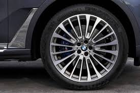
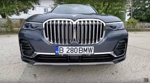
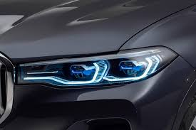

Încă de la prima vedere este clar că BMW X7 demonstrează autoritate şi o prezenţă specială. Îmbinarea dintre suprafeţele generos proporţionate şi liniile de design subtile oferă acestui model aspect puternic şi eleganţă excepţională. Interiorul acestui SAV luxos este foarte generos, iar datorită elementelor decorative elegante, a funcţiilor de relaxare inovatoare şi a funcţiilor de confort, acesta oferă o ambianţă unică, inedită.
JANTE |

Jante din aliaj usor 22" Multi-spoke,tip 757, in Gri Ferric bicolor, lucioase, cu anvelope mixte performante, diferite dimensiuni. Exista si alte stiluri disponibile pentru jante.
GRILA BMW |

Grila BMW a radiatorului, ca element de design central, subliniaza prezenta increzatoare si eleganta automobilului in partea frontala.
LASER LIGHT

Atunci cand este activata faza lunga cu laser, farurile BMW cu design X unic ilumineaza soseaua pe o raza de pana la 600m, adica pe o distanta de paroape doua ori mai mare decat farurile conventionale. Vizibilitatea mai buna pe timp de noapte iti ofera mai multa siguranta in timpul condusului.